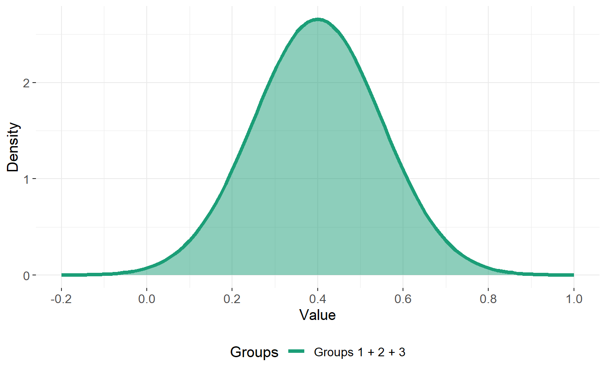

multiDA_vignette_themodel.RmdWe illustrate the main workings of the multiDA model in simplicity for this vignette. Please see the pre-print here for a more detailed exposition.
Suppose you have data \(\textbf{X}\) of dimension $ n p$, with a corresponding response vector \(\textbf{y}\) of length \(n\) describing class membership for each observation.
Further suppose, for this example, our response consists of \(K=3\) classes, and we wish to describe each feature \(j\) by a combination of \(1, 2,\) or \(3\) Gaussian distributions for each class. How can we do this? Let’s consider the cases that can occur for each feature \(j\).
This corresponds to the case of the feature being non-informative.

The multiDA model uses a penalised likelihood ratio test to determine which group structure as described above best describes each feature. The penalisation process is described in detail in the paper. The two penalty options available for this algorithm are the BIC (Schwarz, 1978), and the Extended BIC (EBIC - Chen and Chen, 2008). The EBIC penalty is the default, and is a stronger (and more appropriate) penalty for high dimensional data.
Assuming a multinomial distribution for the response vector \(\textbf{y}\), the multiDA algorithm uses information from a trained model (described above) to predict the probability of class membership for each class for a new datapoint. A probability matrix can be returned, or the value of the most probable class.